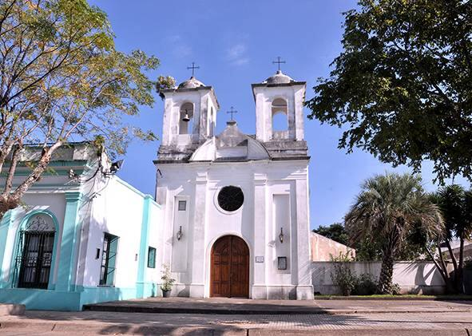
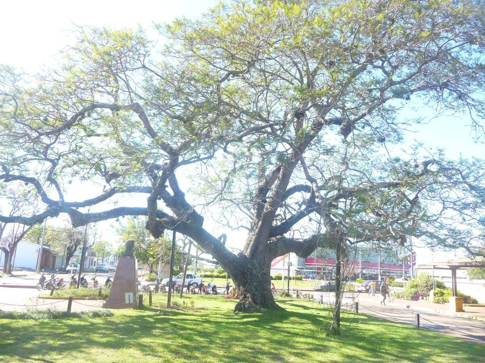
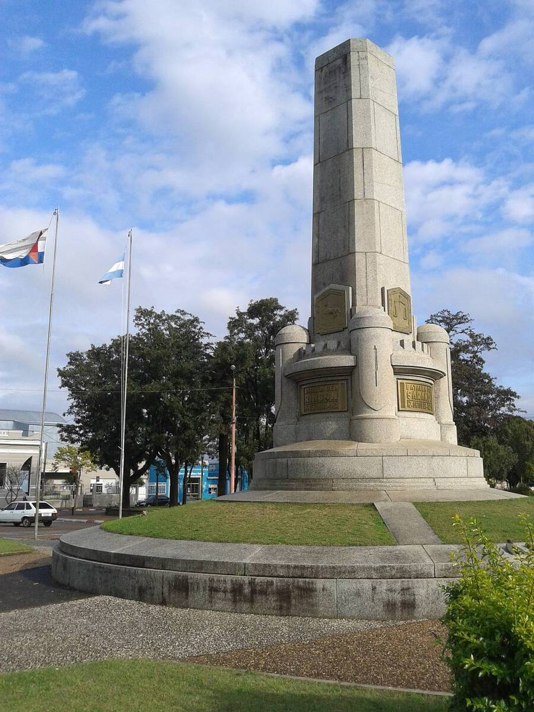
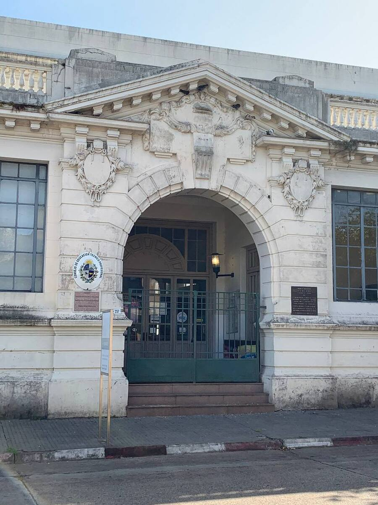

Una ciudad que nació en la frontera
Carlos Catalá fundó la ciudad el 12 de setiembre de 1852 con el nombre de San Eugenio del Cuareim, al terminar la Guerra Grande, para afirmar la frontera con Brasil. En 1915 pasó a ser ciudad y tomó el nombre de Artigas, en homenaje a José Gervasio Artigas. El departamento se había creado por ley el 1° de octubre de 1884.
Para recorrer a pie
- Plaza Artigas: el monumento al prócer, obra de Armando González, tiene una base cubierta con más de 6.000 plaquetas de ágata.
- Iglesia San Eugenio: la más antigua de la ciudad, bendecida en 1854, frente a la plaza. Alberga el Museo Eclesiástico «Padre Anselmo Espada».
- Plaza Batlle: una de las plazas más grandes del país, con el obelisco en homenaje a los héroes de 1825.
- Árbol Ibirapitá, frente a la Terminal de Ómnibus. Según la tradición local, lo trajo de Paraguay Baltasar Brum en 1913, y desciende del árbol del solar de Artigas en ese país.
- Ex Mercado Municipal: edificio neoclásico que hoy funciona como Centro Figari.
Fotos

Foto: Raul Zapata · CC BY-SA 4.0

Foto: Maywiki · CC BY-SA 3.0

Foto: Derys Benitez · CC BY-SA 3.0

Foto: Amurru · CC BY-SA 4.0

Foto: John Fitz Patrick · CC0